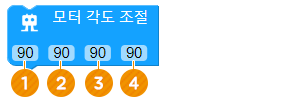
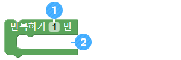
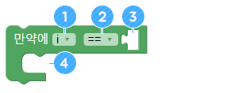

기다려주세요..

미로를 탈출해봐요
• 미로를 탈출하는 알고리즘을 알아봅니다.
• 다양한 상황에서 어썸봇의 동작을 제어해 봅니다.
• 미로의 구간별 특징을 이해하고 탈출 방법을 개발해 봅니다.
가. 미로 탈출하기
어썸봇의 초음파 센서를 이용하면 미로의 벽을 인지하고 막힌 곳을 피해서 미로를 탈출하는 프로그램을 만들 수 있어요.
나. 회전하는 순서 정하기
어썸봇은 완전히 스스로 미로를 탈출하는 프로그램을 만들 수도 있습니다. 하지만, 이 방법은 우리가 만들기엔 많이 복잡합니다. 그림처럼 어썸봇이 걸어간다면 어썸봇은 가장 짧은 거리로 미로를 탈출할 수 있습니다. 이 경로를 따라서 어썸봇이 움직여서 미로를 탈출하는 방법들을 알아봅시다.

다. 초음파 센서로 회전하는 단순 구간
그림에 표시된 부분들은 어썸봇이 걸음 수에 상관없이 걸어가다가 장애물을 만나면 회전하는 방향만 알려주면 출구쪽으로 걸어갈 수 있습니다.
1. 각 위치에서 어썸봇이 어느 방향으로 회전해야 하는지 얘기해보세요.
2. 어썸봇과 장애물 사이의 거리가 어느 정도일 때 회전하는 게 가장 좋을지 얘기해보세요.

라. 초음파 센서로 회전하는 종합 구간
어썸봇이 벽을 만나면 ‘ㄷ’ 모양으로 회전해야 하는 구간입니다. 한 방향으로만 회전하는 것보다 동작도 많이 필요하고 어렵습니다. ④번 구간에서 어썸봇이 어떻게 움직이면 정확한 위치로 이동할 수 있을지 얘기해보세요.

마. 걸음 수로 이동해야 하는 구간
어썸봇이 ‘ㄷ’ 모양으로 회전해야 하는 구간입니다. 한 방향으로만 회전하는 것보다 동작도 많이 필요하고 어렵습니다.
1. 각 구간으로 이동하기 위한 걸음이 몇 걸음인지 측정하고 얘기해보세요.
2. 어썸봇 걸음 수 만으로 정확히 구간을 이동할 수 없다면, 어떤 방법으로 미로를 탈출하면 좋을지 얘기해보세요.
가. 기다리기 ([ADVANCE] 그룹)
지정한 초만큼 동작하지 않고 기다립니다.
클릭 후 기다릴 시간을 초단위로 입력합니다.

프로그램이 실행되면 5초 후에 앞으로 3걸음 걸어가는 프로그램을 만들어 보세요.
나. 차렷 ([BASIC] 그룹)
어썸봇이 차렷자세를 취합니다.
어썸봇이 2초 기다렸다가 앞으로 3걸음 가고 차렷하는 프로그램을 만들어 보세요.
다. 모터 각도 조절 ([BASIC] 그룹)
어썸봇에 연결된 4개의 모터의 각도를 수치를 입력해 조절할 수 있습니다. Set align 블록으로 각도를 조절하고 Attention 블록을 추가한 후 실행을 해야 각도가 변경됩니다. 변경된 각도는 연결이 끊어지면 다시 초기화되므로 각도를 꼭 기억해 놓으세요.
① No.1 모터의 각도를 조절합니다. 기본적으로 90도로 맞춰져 있습니다.
② No.2 모터의 각도를 조절합니다. 기본적으로 90도로 맞춰져 있습니다.
③ No.3 모터의 각도를 조절합니다. 기본적으로 90도로 맞춰져 있습니다.
④ No.4 모터의 각도를 조절합니다. 기본적으로 90도로 맞춰져 있습니다.
각 모터의 각도를 조절해서 앞으로 똑바로 걷게 설정해보세요. 미로를 잘 탈출하려면 바르게 걸을 수 있어야 합니다.
라. 초음파 센서 거리측정 ([SENSOR] 그룹)
초음파 센서를 이용해서 앞에 있는 장애물의 거리를 측정합니다. 측정된 거리 값은 ‘Cm’라는 이름의 변수에 저장됩니다.
마. 반복하기 ([ADVANCE] 그룹)
블록 안의 명령들을 원하는 횟수만큼 반복합니다.
① 반복할 횟수를 지정합니다.
② 반복할 블록을 추가합니다.
바. 무한 반복 ([ADVANCE] 그룹)
블록 안의 블록을 순서대로 계속 실행되도록 합니다.

어썸봇이 계속 앞으로 걸어가는 프로그램을 만들어보세요.
사. 만약에(if) ([ADVANCE] 그룹)
조건으로 입력한 내용이 맞을 때 블록 안의 블록을 실행시킵니다. 조건이 틀리다면 [만약에(if)] 블록 뒤에 있는 블록이 실행됩니다.
① 조건문에 사용할 변수를 입력합니다. 기본 값은 ‘i’이며 초음파 센서 사용시 ‘cm'으로 변경됩니다.
② 조건을 비교할 기준 부등호를 선택합니다.
③ 조건에 사용할 기준 값을 입력합니다. 이때 조건 값을 지정할 블록을 추가해야 합니다.
④ 조건에 맞을 때 실행할 블록들을 추가합니다.
아. 데이터 값 ([ADVANCE] 그룹)
변수나 숫자 등의 데이터 값을 지정할 때 사용합니다.

① 조건으로 사용할 기준 값을 입력합니다.
자. 반복중단 ([ADVANCE] 그룹)
무한반복 프로그램 중 이 블록을 만나면 무한반복을 중지하고 다음 코드를 실행합니다.
① 초음파 센서로 측정된 거리 값이 5cm보다 작으면,
뒤로 3걸음 걸어가는 프로그램을 만들어보세요.
② 어썸봇이 계속 앞으로 걸어가다가 장애물을 만나면(3cm 이내에 장애물) 왼쪽으로 3번 회전한 후에 반복문을 탈출하는 프로그램을 만들어보세요.
가. 게임 규칙
① 가장 짧은 시간에 미로를 탈출하는 프로그램을 만든 학생이 우승하는 게임입니다.
② 그림과 같은 경로 또는 다른 창의적인 방법을 이용해서 어썸봇이 미로를 탈출할 수 있도록 프로그램을 만드세요.
나. 알고리즘
① 빨간색 구간. 어썸봇이 걸어가다가 장애물을 만나면 회전해서 이동하면 됩니다.
② 초록색 구간. 어썸봇이 장애물을 만나면 ‘ㄷ’자 모양으로 이동해야 합니다.
③ 파란색 구간. 어썸봇 마다의 특성에 맞춰서 정확한 걸음 수를 이동한 후에 회전해서 구간을 탈출해야 합니다.

다. 게임하기